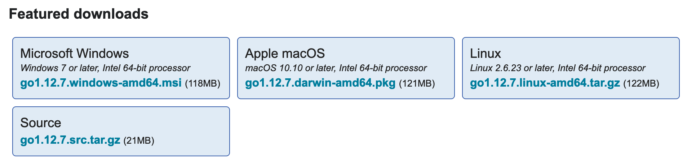
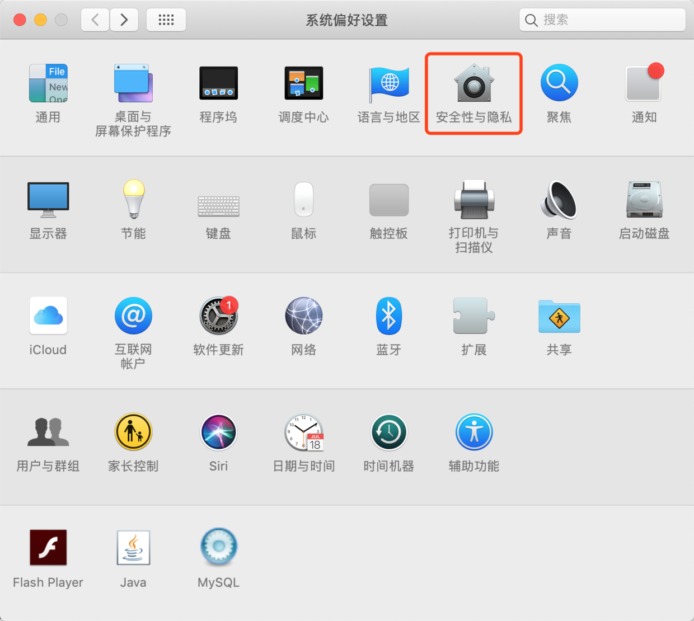
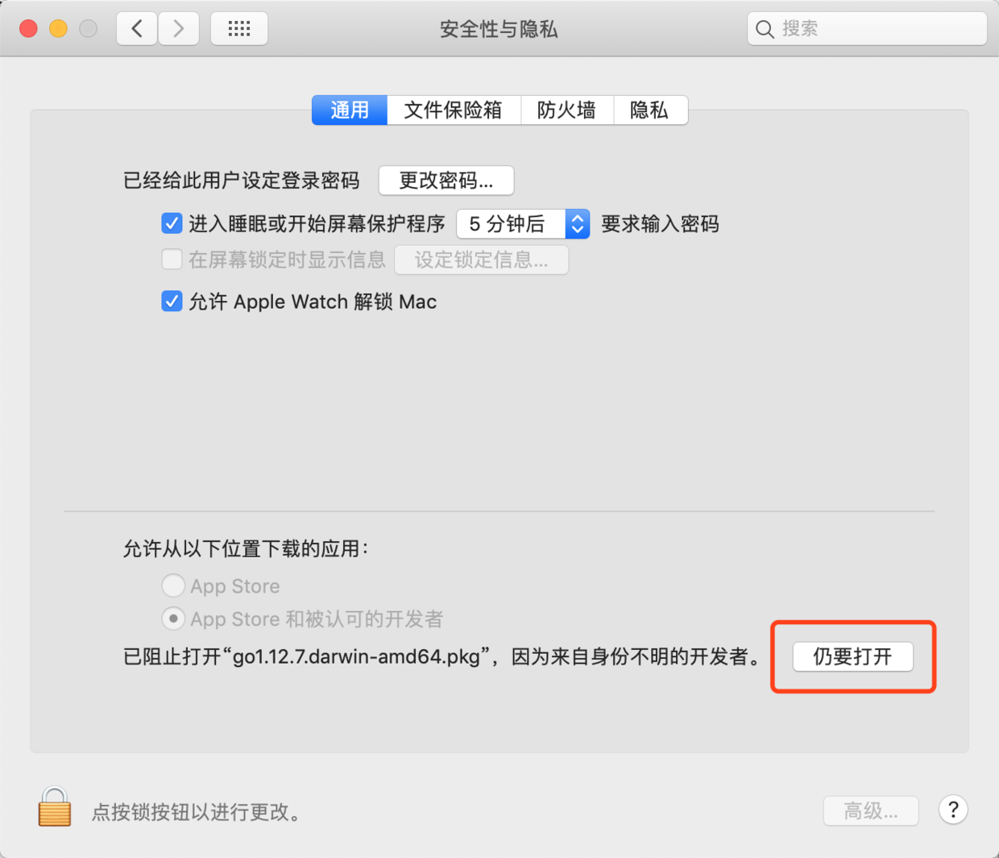

Go 有三种常见的安装方式：
Go 提供的安装程序，这种方式适合快速安装，用户可根据自己的系统位数下载好相应的安装程序，双击运行并安装即可。安装程序支持 Windows、Linux、Mac 等多种操作系统。
使用第三方工具安装，该方式适合熟悉相应操作系统的用户。目前有很多便捷的第三方软件包工具可以安装 Go，例如 Ubuntu 的
apt-get和wget、Mac 的homebrew等。源码安装，对于想深入学习并掌握 Go 语言的用户来说，这种安装方式不失为一种好方法——用户可以自行修改代码、灵活定制功能。
在 Mac OS X 系统安装 Go 的三种方式具体过程如下：
Go安装程序
从 Go 官网下载最新版的安装程序（网速慢的同学请移步国内镜像，提取码为 kc9d），双击运行并安装。

选择 macOS 版本，下载完成之后，双击 go1.12.7.darwin-amd64.pkg 进行安装。如果安装过程出现以下提示：
打开 系统偏好设置*，进入 *安全性与隐私 ，在 通用 栏目下，点击 仍要打开 按钮即可，如下：


默认情况会安装在 /usr/local/go 目录下。可以如下测试设置是否正确: 打开一个终端窗口， 键入：
1 | go version |
然后按回车键。 应该能看到显示以下信息：
1 | go version go1.12.7 darwin/amd64 |
第三方工具——homebrew
homebrew 是 Mac 系统下面目前使用最多的管理软件的工具，目前已支持 Go。
如果你已经安装了 homebrew，直接通过命令 brew install go 安装即可。
1 | ➜ ~ brew install go |
源码安装
Go 1.5 开始就彻底移除了 C 代码，Runtime、Compiler、Linker 均由 Go 编写，实现自举（即用 Go 来编译 Go）。只要安装了上一个版本，即可从源码安装。
但在 Go1.5 前，Go 的源代码中，有部分是用 Plan 9 C 和 AT&T 汇编写的，因此假如你要想从源码安装，就必须安装 C 的编译工具。在 Mac 系统中，只要你安装了 Xcode，就已经包含了相应的编译工具。
以下示例是先编译安装 Go1.4，接着再编译安装 Go1.12。
编译安装Go1.4
首先下载 Go1.4 的源码（国内镜像，提取码为 kc9d）
下载完成之后解压缩到 /usr/local 目录，执行如下代码：
1 | ➜ ~ cp ~/Downloads/go1.4-bootstrap-20161024.tar.gz /usr/local |
解压成功后，可以看到 /usr/local/go 目录，将其重命名 /usr/local/go1.4：
1 | ➜ local mv go go1.4 |
进入到 Go1.4 源码目录 /usr/local/go1.4/src，执行命令 make.bash 开始编译。
1 | ➜ local cd go1.4/src |
编译成功时，你可以看到如下输出：
1 | ➜ src ./make.bash |
如果在编译过程中出现类似以下的问题，只需要在构建时忽略 cgo，即用命令 env CGO_ENABLED=0 ./make.bash 替换上文的 ./make.bash 即可成功编译 Go1.4。
1 | runtime/cgo |
编译安装新版Go（Go1.12）
与编译 Go1.4 流程一样，首先是从 Go 官网（https://golang.org/dl/） 找到最新版的 goVERSION.src.tar.gz 的文件下载，（网速慢的同学请移步国内镜像，提取码为 kc9d）。
下载完成之后将其解压缩到 /usr/local 目录，解压缩成功后，可以看到 /usr/local/go 目录，解压缩命令如下：
1 | ➜ Downloads sudo tar zxf go1.12.7.src.tar.gz -C /usr/local |
设置之前编译的位置为环境变量
1 | ➜ Downloads export GOROOT_BOOTSTRAP=/usr/local/go1.4 |
进入到 Go 源码目录 /usr/local/go/src，执行命令 make.bash 开始编译。
1 | ➜ Downloads cd /usr/local/go/src |
至此，新版 Go 已编译安装成功。但我们还需要设置一些常用的环境变量：
1 | # Golang |
将上面变量写入 .bash_profile 或 .zshrc 文件中，这样每次重启之后都不用重新指定了。相关命令如下：
1 | ➜ src vim ~/.bash_profile |
同样可以用以下方法测试环境变量设置是否正确: 打开一个终端窗口， 键入：
1 | go version |
然后按回车键。 应该能看到显示以下信息：
1 | go version go1.12.7 darwin/amd64 |
如果得到诸如“ command not found: go” ( 命令未找到: go)此类的错误，就说明环境变量没有设置正确，需要重新检査在哪一步设置错误。